Stereo-seq Human Colon: Segmented Cells
Source:vignettes/stereoseq_human_colon_cells_giottodisk.Rmd
stereoseq_human_colon_cells_giottodisk.Rmd1 Overview
This tutorial starts from the cells that STOmics’ SAW pipeline segmented on a Stereo-seq section of human colon. It reads them into an on-disk GiottoDisk project, clusters them, and names the clusters with a cluster tree. It then sums the 0.5 µm spots into hexagonal bins of about 10 and 40 cells and finds larger spatial domains in two ways: by clustering the bins’ expression, and by grouping the bins on their mix of cell types. The whole tutorial runs in about 6.5 minutes with 8 parallel workers; Run time and memory shows the time and memory of each step.
On a disk-backed object the expression matrix and the cell polygons live as parquet files in a project directory, so the same Giotto commands run on data larger than memory. The Stereo-seq mouse testis tutorial does the same on a fresh frozen section.
2 Install extra packages
This tutorial uses GiottoDisk for on-disk processing. These are preview dev builds off the dev and gsource Giotto package branches. If GiottoDisk has not been installed yet, use the following:
# GiottoDisk install
GiottoUtils::suite_install("GiottoDisk")
# Optional for matrix maths speedup:
install.packages("GiottoKernels",
repos = c("https://giotto-suite.r-universe.dev", "https://cloud.r-project.org")
)3 Dataset explanation
A formalin-fixed paraffin-embedded (FFPE) section of human colon on a Stereo-seq chip (Y02357D814), made with the Stereo-seq N FFPE V1.1 kit, stained for single-stranded DNA (ssDNA) and processed with SAW 8.2. Stereo-seq captures transcripts on spots 0.5 µm apart; SAW sums them into square bins of 1 to 200 spots and, separately, into cells.
SAW segments the nuclei in the ssDNA image and assigns the spots to
cells. Y02357D814.cellbin.gef holds that segmentation, and
Y02357D814.adjusted.cellbin.gef the result of SAW’s cell
correction, which refines which spots belong to each cell. This tutorial
uses the adjusted cells, the default of the Giotto readers: 101,479
cells with a median of 518 counts and 354 genes each. The section shows
normal colon mucosa: neither the cells nor the spatial domains below
show a tumor signature. The spatial domains at the end are built from
the spots themselves, read from Y02357D814.tissue.gef. SAW
also ships a microorganism count matrix for this chip, which is not used
here.
| File | Size | Contents |
|---|---|---|
Y02357D814.adjusted.cellbin.gef |
650 MB | cell by gene counts, cell outlines |
Y02357D814.tissue.gef |
3.8 GB | spot by gene counts under the tissue, and square bins |
Y02357D814_ssDNA_regist.tif |
295 MB | ssDNA image, registered to the chip |
4 Setup
library(arrow) # this must be libraried before terra or GiottoClass
library(Giotto)
library(GiottoDisk)
data_dir <- Sys.getenv("COLON_DATA_DIR", "path/to/Y02357D814")
project_dir <- Sys.getenv("COLON_PROJECT_DIR", "path/to/stereoseq_colon_cells_project")
# set an appropriate amount of parallel workers for your computer
future::plan(future::multisession, workers = 8)5 Read the data
sourceCreate() sets up a gDirSource: a
managed project directory that holds the object on disk.
setArtifactDumpDir() points the expression and spatial
writes at it.
# declare a Giotto directory backend to use
gdsrc <- GiottoDisk::sourceCreate(project_dir, type = "gDirSource")
# point data content writes to the backend's artifact subdirectory
GiottoDisk::setArtifactDumpDir(gdsrc)createGiottoStereoSeqObjectCell() reads the adjusted
cellbin GEF: the cell by gene counts, the cell centers and outlines, and
the registered ssDNA image. Passing the backend to backend
creates the object as a disk-backed project.
g <- createGiottoStereoSeqObjectCell(data_dir,
gef_type = "adjusted_cellbin",
backend = gdsrc # creates the object as a backed project
)
gAn object of class giotto
>Active spat_unit: cell
>Active feat_type: rna
dimensions : 38765, 101479 (features, cells)
[SUBCELLULAR INFO]
polygons : cell
[AGGREGATE INFO]
expression -----------------------
[cell][rna] raw
spatial locations ----------------
[cell] raw
attached images ------------------
images : image
Use objHistory() to see steps and params usedThe expression matrix and the polygons are disk stores:
class(getExpression(g, output = "exprObj")[])
class(getPolygonInfo(g, "cell", return_giottoPolygon = TRUE)[])[1] "parquetExprStore"
attr(,"package")
[1] "GiottoDisk"
[1] "parquetGeomStore"
attr(,"package")
[1] "GiottoDisk"The cell outlines over the ssDNA image, in a region with crypts and a lymphoid follicle:
roi_x <- 6700
roi_y <- -9900
half <- 500 # spots; 0.25 mm at 0.5 um per spot
spatInSituPlotPoints(g,
show_image = TRUE,
feats = NULL,
show_polygon = TRUE,
polygon_feat_type = "cell",
polygon_color = "yellow",
polygon_alpha = 0,
polygon_line_size = 0.2,
xlim = c(roi_x - half, roi_x + half),
ylim = c(roi_y - half, roi_y + half)
)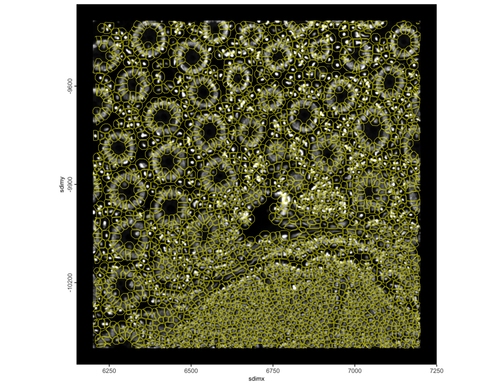
5.1 Save
Backed Giotto projects write named snapshots of the analysis state to the project directory, which can be treated as checkpoints.
# The return value is needed since saveGiotto makes changes during the write
g <- saveGiotto(g, name = "ingest") backend : `gDirSource`
path : path/to/stereoseq_colon_cells_project6 Quality control and filtering
g <- addStatistics(g, expression_values = "raw")
cx <- pDataDT(g)
cat(sprintf("%s cells | median %d counts, %d features per cell\n",
format(nrow(cx), big.mark = ","),
median(cx$total_expr), median(cx$nr_feats))
)101,479 cells | median 518 counts, 354 features per cellBesides the mitochondrial transcripts, the most widely detected genes include the immunoglobulins IGKC and JCHAIN, found in nearly every cell. The colon mucosa is full of plasma cells, and their abundant transcripts spread to the cells around them. Expect them among the markers of many clusters below.
feat_ID perc_cells
<char> <num>
1: MT-CO3 99.54178
2: IGKC 98.94559
3: MT-ND4 96.74317
4: MT-RNR2 95.99129
5: MT-CYB 94.88071
6: B2M 94.60085
7: JCHAIN 92.20824
8: MT-ND3 91.04741A gene has to be detected in at least 100 cells to be kept. Genes found in only a handful of the 100,000 cells otherwise get the same weight as any other in the scaled PCA below, and Leiden then splits off small clusters held together by a few rare transcripts.
g <- filterGiotto(g,
expression_threshold = 1,
feat_det_in_min_cells = 100,
min_det_feats_per_cell = 50,
verbose = FALSE
)
cat(sprintf("%s cells x %s features retained\n",
format(length(spatIDs(g)), big.mark = ","),
format(nrow(fDataDT(g)), big.mark = ","))
)100,837 cells x 15,985 features retained7 Normalize and select features
This is whole-transcriptome data, so highly variable features are selected before the PCA.
g <- normalizeGiotto(g,
scalefactor = 1e4,
logbase = exp(1),
log_offset = 1,
scale_feats = FALSE,
scale_cells = FALSE,
verbose = FALSE
)
g <- calculateHVF(g,
method = "var_p_resid",
n_top_feats = 2000,
verbose = FALSE
)The highly variable features are chosen by Pearson residuals
(method = "var_p_resid"), which work on the raw counts and
suit data with a few hundred counts per cell.
8 Dimension reduction
g <- runPCA(g,
feats_to_use = "hvf",
ncp = 50,
scale_unit = TRUE,
center = TRUE,
verbose = FALSE
)
screePlot(g, ncp = 50)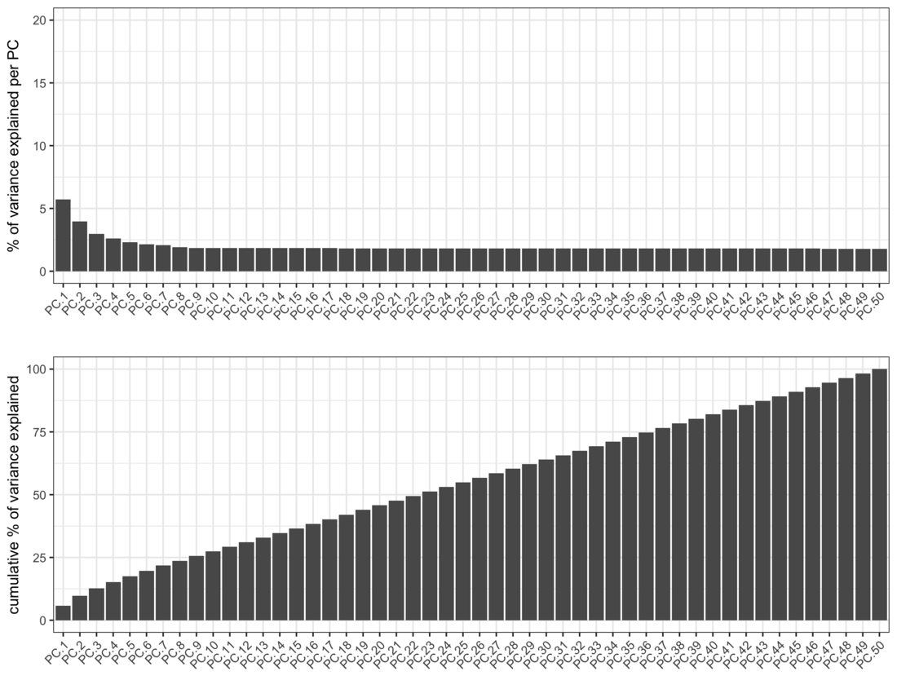
The scree plot flattens after about 15 PCs, so those are used below.
9 Clustering
The kNN network is built first. runUMAP() then reuses it
instead of searching for neighbors again, and Leiden clusters on the
same network. The resolution is set on the high side: the cluster tree
below groups the clusters again, so it is better to split too much than
too little.
dims_to_use <- 1:15
g <- createNearestNetwork(g,
type = "kNN",
dimensions_to_use = dims_to_use,
k = 30,
engine = "hnsw",
verbose = FALSE
)
g <- runUMAP(g,
dimensions_to_use = dims_to_use,
n_neighbors = 30,
min_dist = 0.3,
verbose = FALSE
)
g <- doLeidenCluster(g,
nn_network_to_use = "kNN",
network_name = "kNN.pca",
resolution = 2,
n_iterations = 20,
objective_function = "modularity",
verbose = FALSE
)
table(pDataDT(g)$leiden_clus)
clusters <- GiottoUtils::mixedsort(unique(as.character(pDataDT(g)$leiden_clus)))
# one color per cluster, shared by the plots below
clus_colors <- stats::setNames(getDistinctColors(length(clusters)), clusters)
g <- saveGiotto(g, name = "clustered")
1 2 3 4 5 6 7 8 9 10 11 12 13 14 15 16
3896 4087 5664 6828 5247 3676 4761 2430 3556 4119 3995 3296 2026 5174 3514 5920
17 18 19 20 21 22 23 24
4225 3304 7038 3849 2985 4886 6188 173
backend : `gDirSource`
path : path/to/stereoseq_colon_cells_project
plotUMAP(g,
cell_color = "leiden_clus",
color_as_factor = TRUE,
cell_color_code = clus_colors,
point_border_stroke = 0,
point_size = 0.8
)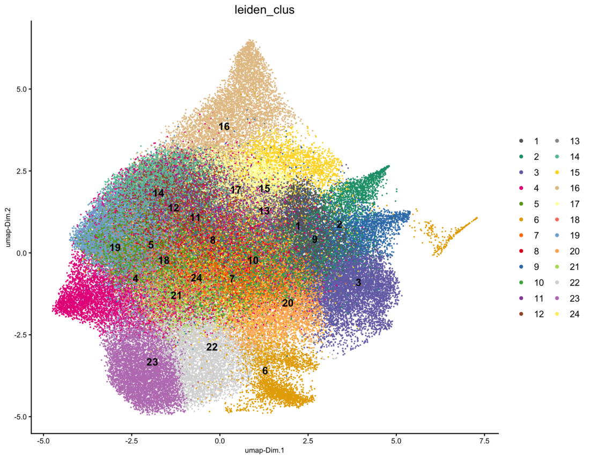
spatPlot2D(g,
cell_color = "leiden_clus",
color_as_factor = TRUE,
cell_color_code = clus_colors,
point_border_stroke = 0,
point_size = 0.3,
background_color = "black"
)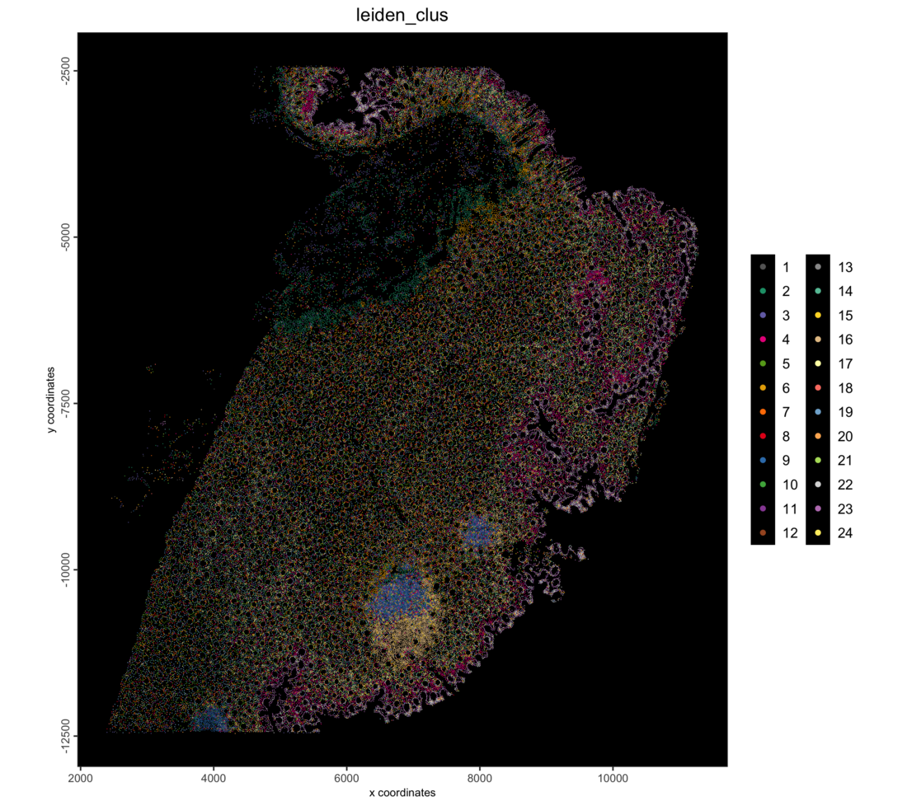
10 Cell typing with a cluster tree
The clusters are grouped into a tree by how similar their expression is. Each cluster and each branch of the tree then gets markers, and a language model names them from those markers. Cutting the tree at a few levels gives cell type labels from tissue compartments down to cell types.
10.1 Build the cluster tree
CLUS <- "leiden_clus"
hvf <- fDataDT(g)[hvf == "yes"]$feat_ID
tree <- calculateClusterTree(g,
cluster_column = CLUS,
feats = hvf,
cor = "pearson",
distance = "average"
)
plot(tree, hang = -1)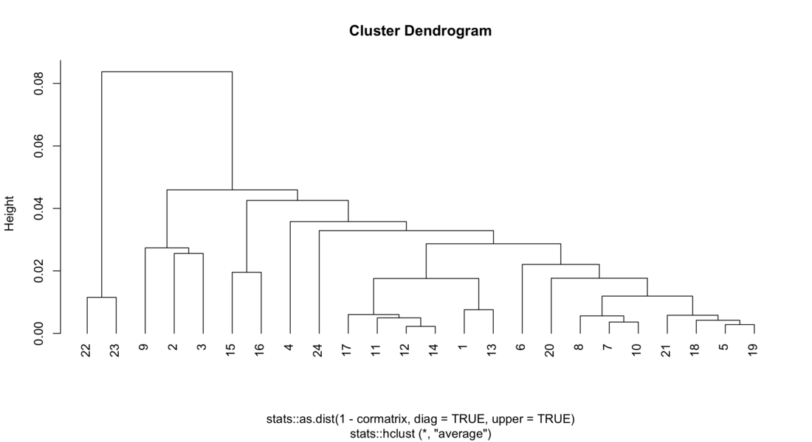
10.2 Markers
mk <- findMarkers_one_vs_all(g,
method = "scran",
cluster_column = CLUS,
min_feats = 10,
verbose = FALSE
)
gi <- findGiniMarkers_one_vs_all(g,
cluster_column = CLUS,
min_feats = 10,
verbose = FALSE
)
nm <- findClusterTreeMarkers(g,
cluster_column = CLUS,
tree = tree,
method = "scran",
verbose = FALSE
)10.3 Assemble the annotation prompt
writeClusterTreeQuery() writes the tree, the per-cluster
markers and the markers of each split into one prompt for a language
model, together with a description of the sample.
prompt_file <- file.path(tempdir(), "stereoseq_colon_celltyping_prompt.txt")
q <- writeClusterTreeQuery(g,
cluster_column = CLUS,
tree = tree,
markers = mk,
gini_markers = gi,
node_markers = nm,
context = list(
tissue = "human colon, FFPE section",
assay = "Stereo-seq N FFPE whole-transcriptome, SAW 8.2 adjusted cellbin from ssDNA segmentation"
),
file_name = prompt_file
)
cat(length(q), "lines\n")399 lines10.4 Apply the annotation
The model answers with a cell type for each cluster and a short name
for each node of the tree. Its answer, checked against the markers above
and against where each cluster sits in the tissue, is written out below
as labels. Leiden cluster numbers can change between
package versions or numbers of workers, so check the markers before
reusing these labels on your own run.
The first split of the tree separates the surface colonocytes, and the next ones the lymphoid follicles with the smooth muscle around them, the IgG plasma cells and the macrophages. Below that, the crypt epithelium and the lamina propria between the crypts split into many clusters, and within each of these two groups the clusters differ by less than 2%. Segmented cells pick up counts from their neighbors, and in the mucosa every crypt cell borders IgA plasma cells, so these clusters are gradients rather than separate cell types. Cluster 24 (173 cells) has no recognizable markers and is left unresolved.
annotateClusterTree() turns the tree into cell type
columns at several levels of detail: k is the number of
groups at each level. Here the tree is annotated at 5 groups, for the
tissue compartments, and at 12 groups, for the cell types.
labels <- list(
# a cell type for each Leiden cluster
clusters = c(
"1" = "lamina propria",
"2" = "smooth muscle",
"3" = "follicle lymphocytes",
"4" = "macrophages",
"5" = "crypt epithelium",
"6" = "Paneth-like cells",
"7" = "lower crypt epithelium",
"8" = "lower crypt epithelium",
"9" = "follicle B cells",
"10" = "lower crypt epithelium",
"11" = "lamina propria with smooth muscle",
"12" = "IgA plasma cells",
"13" = "lamina propria",
"14" = "IgA plasma cells",
"15" = "IgG plasma cells, mixed",
"16" = "IgG plasma cells",
"17" = "IgA plasma cells",
"18" = "upper crypt epithelium",
"19" = "crypt epithelium",
"20" = "colonocytes, high mitochondrial",
"21" = "transit colonocytes",
"22" = "surface colonocytes",
"23" = "absorptive colonocytes",
"24" = "unresolved (CALHM6+)"
),
# a short name for each node of the tree
nodes = c(
"23" = "all cells",
"22" = "crypts, lamina propria and lymphoid tissue",
"21" = "crypts, plasma cells and myeloid",
"20" = "crypts, lamina propria and myeloid",
"19" = "crypts and lamina propria",
"18" = "crypts and lamina propria",
"17" = "follicle and muscle",
"16" = "follicle lymphocytes and smooth muscle",
"15" = "crypt epithelium",
"14" = "IgG plasma cells",
"13" = "crypt epithelium",
"12" = "lamina propria, IgA plasma cells",
"11" = "crypt epithelium",
"10" = "surface colonocytes",
"9" = "lamina propria",
"8" = "lamina propria, IgA plasma cells",
"7" = "upper crypt",
"6" = "lower crypt",
"5" = "lamina propria, IgA plasma cells",
"4" = "crypt epithelium",
"3" = "lower crypt",
"2" = "crypt epithelium",
"1" = "IgA plasma cells"
)
)
lvls <- GiottoUtils::mixedsort(unique(as.character(pDataDT(g)[[CLUS]])))
g <- annotateClusterTree(g,
tree = tree,
labels = labels,
cluster_column = CLUS,
k = c(5, 12, length(lvls))
)
table(g$cell_types_k12)
colonocytes, high mitochondrial crypt epithelium
3849 29884
follicle B cells follicle lymphocytes
3556 5664
IgG plasma cells IgG plasma cells, mixed
5920 3514
lamina propria, IgA plasma cells macrophages
22612 6828
Paneth-like cells smooth muscle
3676 4087
surface colonocytes unresolved (CALHM6+)
11074 173
GiottoVisuals::plotClusterTree(g,
cluster_column = CLUS,
tree = tree,
labels = labels,
k = c(5, 12),
gini_markers = gi,
node_labels = FALSE
)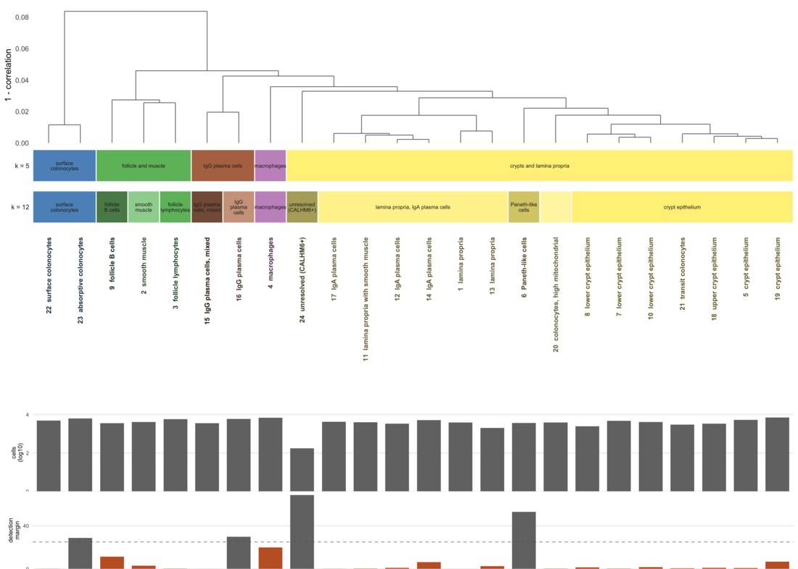
11 Results
# one hue per tissue compartment; the cell types below use shades of it
k5_colors <- c(
"crypts and lamina propria" = "#146ff2",
"follicle and muscle" = "#0de5d0",
"IgG plasma cells" = "#e85f0e",
"macrophages" = "#b25b8d",
"surface colonocytes" = "#f2c23d"
)
spatPlot2D(g,
color_as_factor = TRUE,
cell_color = "cell_types_k5",
cell_color_code = k5_colors,
point_border_stroke = 0,
point_size = 0.5,
background_color = "black",
theme_param = list(legend.position = "right")
)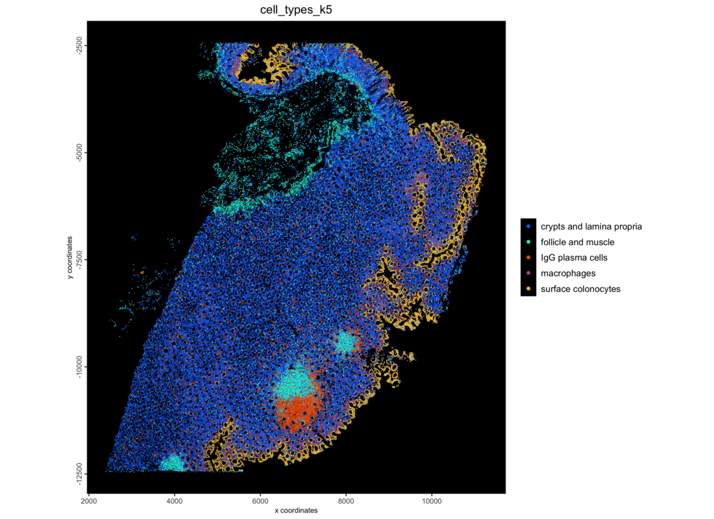
The cell types take shades of their compartment’s color, reused in the zoom below:
k12_colors <- c(
# crypts and lamina propria: blues
"crypt epithelium" = "#146ff2",
"colonocytes, high mitochondrial" = "#62a0ff",
"Paneth-like cells" = "#4b3fd9",
"lamina propria, IgA plasma cells" = "#b8d6ff",
"unresolved (CALHM6+)" = "#8c8c8c",
# follicle and muscle: teals
"follicle B cells" = "#0de5d0",
"follicle lymphocytes" = "#a2f7ee",
"smooth muscle" = "#0b6b63",
# IgG plasma cells: oranges
"IgG plasma cells" = "#e85f0e",
"IgG plasma cells, mixed" = "#b3410a",
"macrophages" = "#b25b8d",
"surface colonocytes" = "#f2c23d"
)
spatPlot2D(g,
color_as_factor = TRUE,
cell_color = "cell_types_k12",
cell_color_code = k12_colors,
point_border_stroke = 0,
point_size = 0.5,
background_color = "black",
theme_param = list(legend.position = "right")
)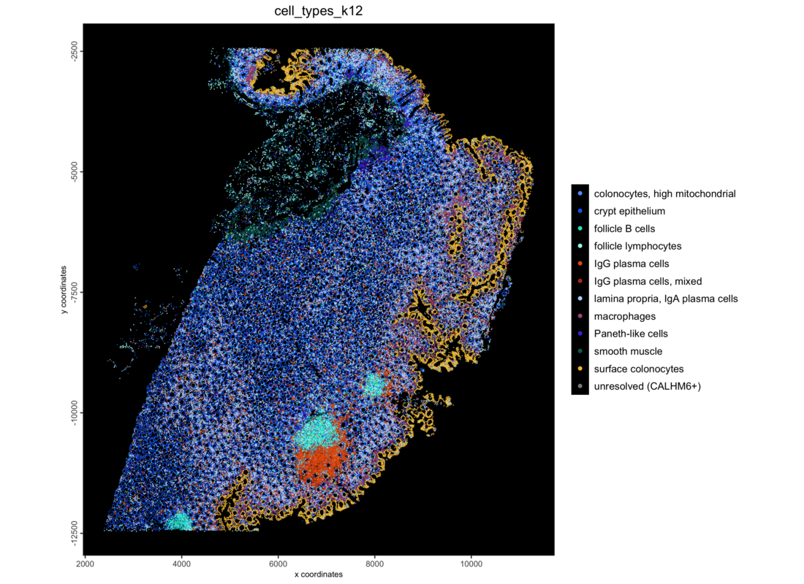
Zoom into the region from the start, with the cell polygons filled by cell type over the ssDNA image:
spatInSituPlotPoints(g,
show_image = TRUE,
feats = NULL,
show_polygon = TRUE,
polygon_feat_type = "cell",
polygon_fill = "cell_types_k12",
polygon_fill_as_factor = TRUE,
polygon_fill_code = k12_colors,
polygon_line_size = 0.1,
polygon_alpha = 0.7,
xlim = c(roi_x - half, roi_x + half),
ylim = c(roi_y - half, roi_y + half)
)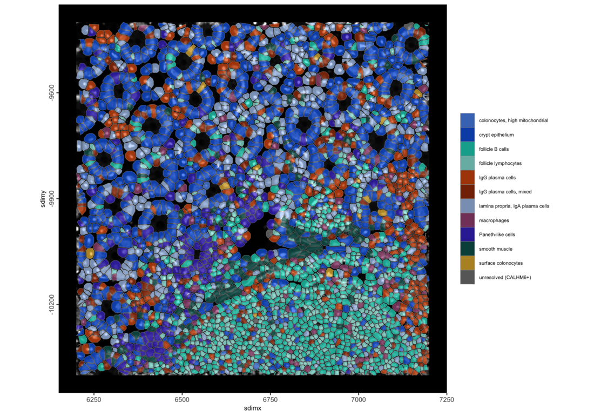
The same region, with the cells filled by the normalized expression of marker genes: surface colonocytes (CEACAM7), the crypt epithelium (OLFM4), Paneth-like cells at the crypt bases (DEFA5), IgA plasma cells (IGHA1), follicle B cells (MS4A1) and smooth muscle (ACTA2):
marker_genes <- c("CEACAM7", "OLFM4", "DEFA5", "IGHA1", "MS4A1", "ACTA2")
for (gene in marker_genes) {
print(spatInSituPlotPoints(g,
show_image = TRUE,
feats = NULL,
show_polygon = TRUE,
polygon_feat_type = "cell",
polygon_fill = gene,
expression_values = "normalized",
polygon_fill_as_factor = FALSE,
polygon_fill_gradient_style = "sequential",
polygon_line_size = 0.1,
polygon_alpha = 0.8,
xlim = c(roi_x - half, roi_x + half),
ylim = c(roi_y - half, roi_y + half),
show_plot = FALSE,
return_plot = TRUE
) + ggplot2::ggtitle(gene))
}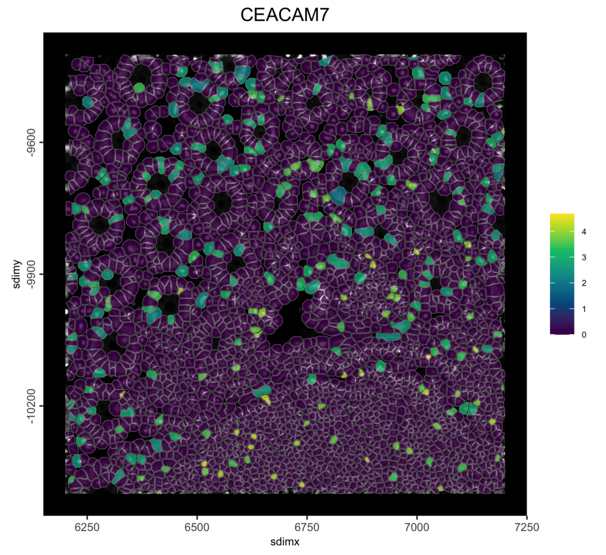
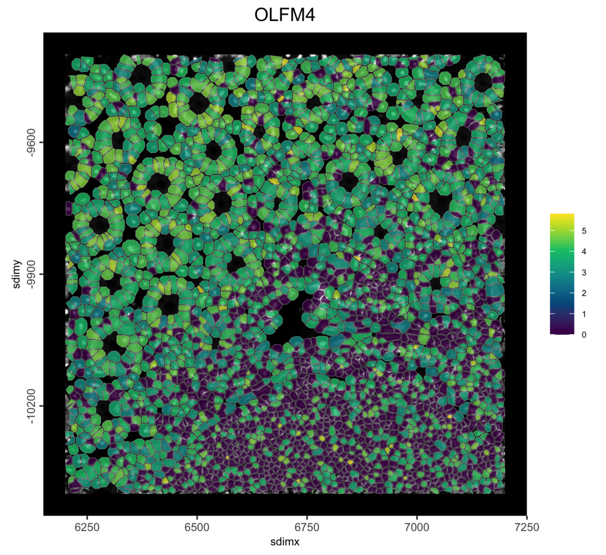
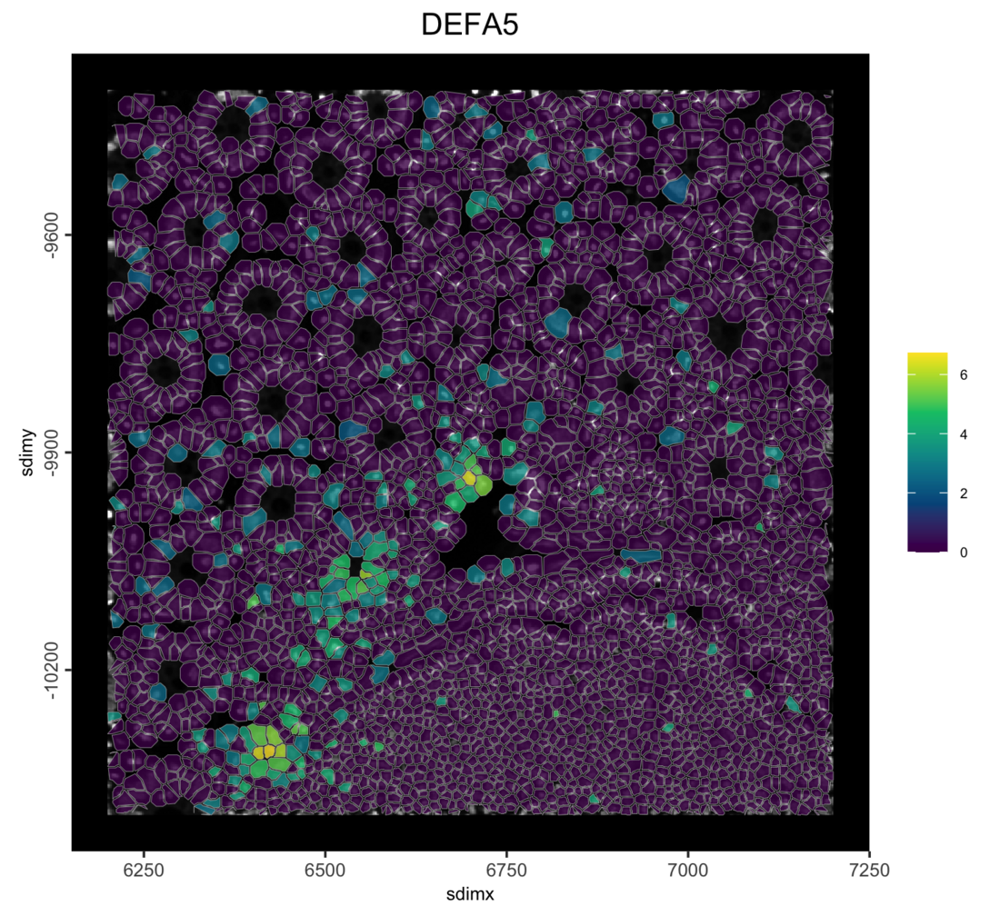
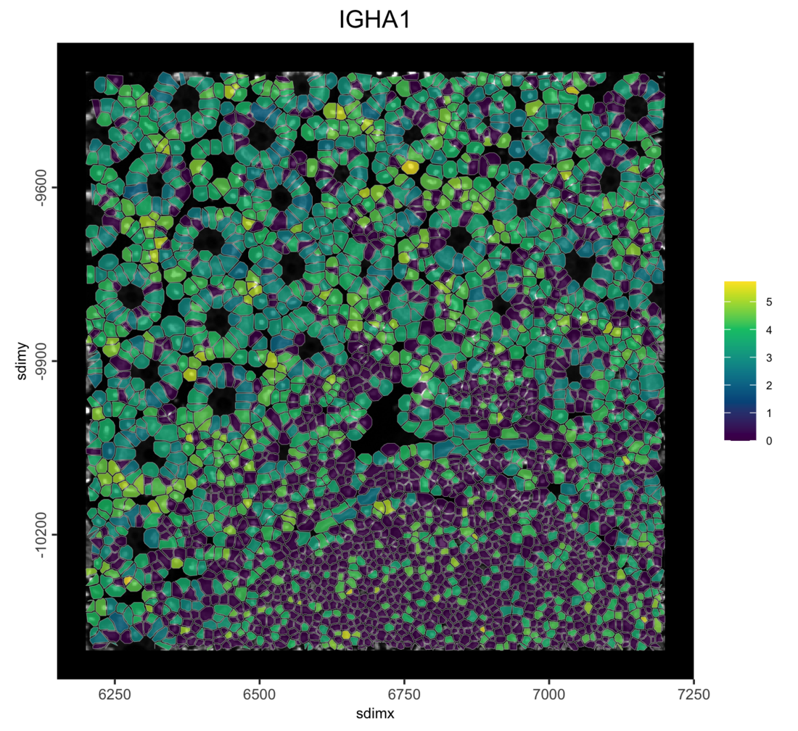
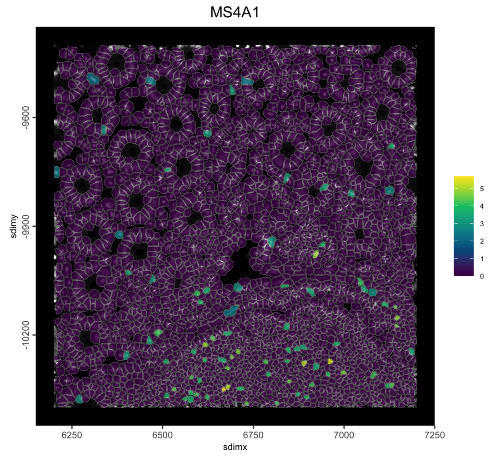
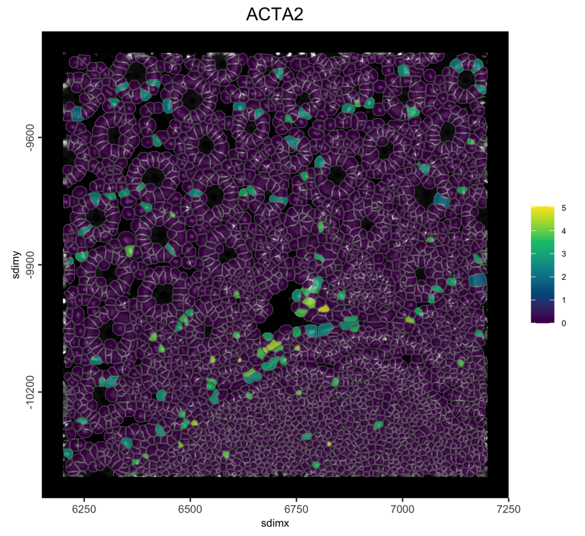
g <- saveGiotto(g, name = "annotated") backend : `gDirSource`
path : path/to/stereoseq_colon_cells_projectThe object is saved to the project directory and can be reloaded with
loadGiotto(project_dir, name = "annotated").
12 Spatial domains from hexagonal bins
Cells show which cell types are where. Larger units show how they are organized: the epithelium, the lamina propria between the crypts, lymphoid follicles and the muscle layers. Any set of polygons can become a spatial unit in Giotto, so a grid of hexagons a few cells wide can be filled with the same spots the cells were built from and analyzed with the same functions.
12.1 Read the spots
The cellbin GEF holds counts per cell only. The spots are in the
tissue GEF, which the reader for cells can also load. Given the project
as backend, importStereoSeq() returns a disk
reader whose load_binpoints() streams the spots into the
project directory: their gene counts into an expression store and one
point per spot into a tiled point store. setGiotto() then
adds them to the object as the rna features.
This is the largest step of the tutorial, 70 million gene counts on
21.7 million spots. The read works in batches sized from the free
memory: by default it may take a quarter of it, which on a large machine
means reading everything in one batch.
options(giottodisk.gef_batch_rows = 5e6) caps the batch at
5 million records.
reader <- importStereoSeq(data_dir,
type = "cell",
gef_type = "adjusted_cellbin",
backend = gdsrc # a disk reader: the spots stream into the project
)
spots <- reader$load_binpoints()
spots
g <- setGiotto(g, spots, verbose = FALSE)An object of class giottoBinPoints
feat_type : "rna"
bins : 21,666,942
features : 39,947
<parquetGeomTileStore>
path : path/to/stereoseq_colon_cells_project/artifacts/[...]/data
geomtype : points
extent : 2067, 11308, -12732, -2225 (xmin, xmax, ymin, ymax)
columns : feat_ID [row_index, source_id, x_index, y_index, geom, tile_index (internal)]
nrows : 21,666,942
tiles : 29
lazy ops:
<none>The GEF records the distance between spots (resolution,
in nm), so the grid can be sized in µm:
gef_attr <- rhdf5::h5readAttributes(
file.path(data_dir, "Y02357D814.tissue.gef"), "geneExp/bin1/expression"
)
um_to_px <- 1000 / as.numeric(gef_attr$resolution)
um_to_px[1] 212.2 Choose the bin size
tessellate() makes a grid of hexagons;
shape_size is the width of one hexagon, in spots. How many
cells a hexagon holds depends on the tissue, so it is worth counting
before choosing. terra::relate() finds the hexagon each
cell center falls in:
# the spots' extent; the extent of g also covers the whole ssDNA image
spots_ext <- ext(getFeatureInfo(g, feat_type = "rna", return_giottoPoints = TRUE))
cell_locs <- getSpatialLocations(g, spat_unit = "cell", output = "data.table")
cell_pts <- terra::vect(as.data.frame(cell_locs), geom = c("sdimx", "sdimy"))
# which cells fall in which hexagon, for hexagons size_um wide
hex_members <- function(size_um) {
hex <- tessellate(spots_ext,
shape = "hexagon",
shape_size = size_um * um_to_px,
name = paste0("hex", size_um)
)
pairs <- terra::relate(hex[], cell_pts, "contains", pairs = TRUE)
data.table::data.table(
hex_ID = hex[]$poly_ID[pairs[, 1]],
cell_ID = cell_locs$cell_ID[pairs[, 2]]
)
}
size_table <- data.table::rbindlist(lapply(c(30, 40, 50, 60, 80, 100), function(size_um) {
n <- hex_members(size_um)[, .N, by = hex_ID]$N
data.table::data.table(
width_um = size_um,
hexagons_with_cells = length(n),
median_cells = median(n),
q25 = quantile(n, 0.25),
q75 = quantile(n, 0.75)
)
}))
size_table width_um hexagons_with_cells median_cells q25 q75
<num> <int> <num> <num> <num>
1: 30 17267 6 4 7
2: 40 10099 10 7 13
3: 50 6611 15 11 19
4: 60 4672 22 16 27
5: 80 2689 39 27 48
6: 100 1752 60 42 74Hexagons 40 µm wide hold about 10 cells and hexagons 80 µm wide about 40, which covers the 10 to 50 cells wanted here. Both are made below.
12.3 Aggregate the spots
calculateOverlap() finds the hexagon each spot falls in,
and overlapToMatrix() sums the spots’ counts per hexagon
into a new expression matrix. The grid covers the whole chip, so
hexagons with fewer than 500 genes detected, on the tissue edge or off
the tissue, are dropped with subsetGiotto().
hex_units <- c(hex40 = 40, hex80 = 80)
for (unit in names(hex_units)) {
hex <- tessellate(spots_ext,
shape = "hexagon",
shape_size = hex_units[[unit]] * um_to_px,
name = unit
)
g <- setGiotto(g, hex, centroids_to_spatlocs = TRUE, verbose = FALSE)
g <- calculateOverlap(g, spat_info = unit, feat_info = "rna")
g <- overlapToMatrix(g, spat_info = unit, feat_info = "rna", name = "raw")
# keep the hexagons on the tissue
g <- addStatistics(g, spat_unit = unit, expression_values = "raw", verbose = FALSE)
on_tissue <- pDataDT(g, spat_unit = unit)[nr_feats >= 500, cell_ID]
g <- subsetGiotto(g,
spat_unit = unit,
cell_ids = on_tissue,
poly_info = unit,
verbose = FALSE
)
cat(unit, ":", format(length(on_tissue), big.mark = ","), "hexagons on the tissue\n")
}hex40 : 10,329 hexagons on the tissue
hex80 : 2,685 hexagons on the tissueThe hexagons over the crypts, the follicle and the muscle in a wider region around the zoom from above, filled with the counts of OLFM4 (crypt epithelium) and MS4A1 (follicle B cells):
half_wide <- 1500 # spots; 0.75 mm
for (unit in names(hex_units)) {
for (gene in c("OLFM4", "MS4A1")) {
print(spatInSituPlotPoints(g,
show_image = TRUE,
feats = NULL,
show_polygon = TRUE,
polygon_feat_type = unit,
polygon_fill = gene,
expression_values = "raw",
polygon_fill_as_factor = FALSE,
polygon_fill_gradient_style = "sequential",
polygon_line_size = 0.1,
polygon_alpha = 0.8,
xlim = c(roi_x - half_wide, roi_x + half_wide),
ylim = c(roi_y - half_wide, roi_y + half_wide),
show_plot = FALSE,
return_plot = TRUE
) + ggplot2::ggtitle(paste0(gene, ", ", unit)))
}
}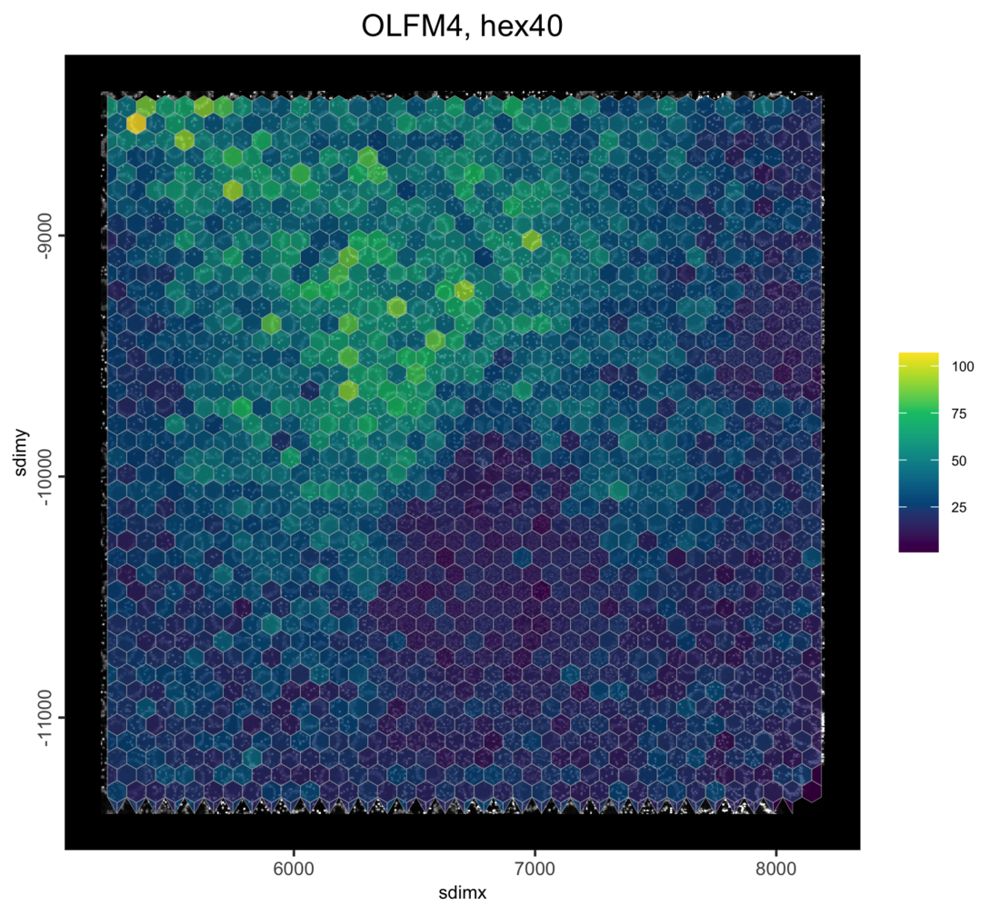
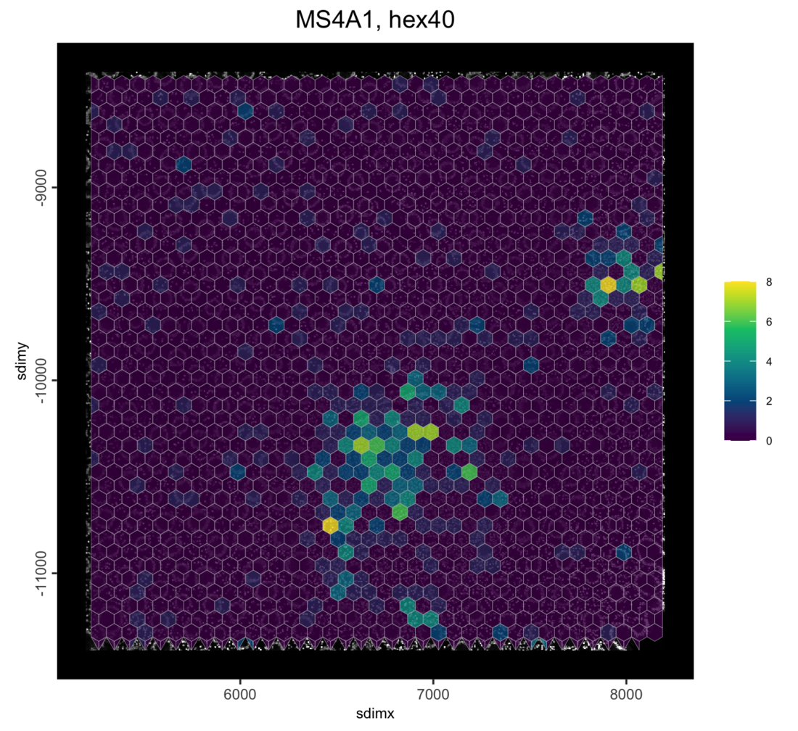
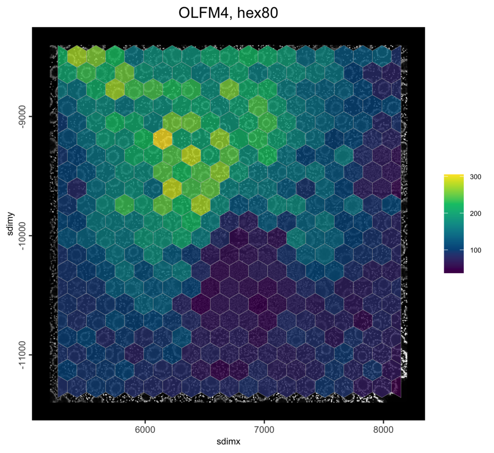
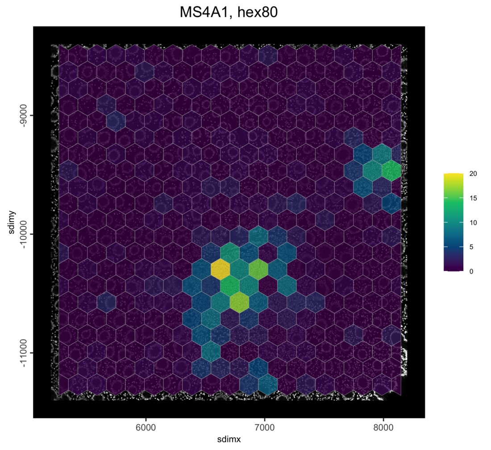
12.4 Domains from expression
The hexagons go through the same steps as the cells: normalization,
highly variable features, PCA, a kNN network and Leiden clustering, each
with spat_unit set to the grid. A hexagon averages over its
cells, so a lower resolution than for the cells gives a few large
domains.
for (unit in names(hex_units)) {
g <- normalizeGiotto(g,
spat_unit = unit,
scalefactor = 1e4,
scale_feats = FALSE,
scale_cells = FALSE,
verbose = FALSE
)
g <- calculateHVF(g,
spat_unit = unit,
method = "var_p_resid",
n_top_feats = 2000,
show_plot = FALSE,
return_plot = FALSE
)
g <- runPCA(g,
spat_unit = unit,
feats_to_use = "hvf",
ncp = 30,
scale_unit = TRUE,
center = TRUE
)
g <- createNearestNetwork(g,
spat_unit = unit,
type = "kNN",
dimensions_to_use = 1:15,
k = 15,
engine = "hnsw",
verbose = FALSE
)
g <- doLeidenCluster(g,
spat_unit = unit,
nn_network_to_use = "kNN",
network_name = "kNN.pca",
resolution = 0.8,
n_iterations = 20,
objective_function = "modularity",
name = "domain",
verbose = FALSE
)
}
table(pDataDT(g, spat_unit = "hex40")$domain)
table(pDataDT(g, spat_unit = "hex80")$domain)
1 2 3 4 5 6 7 8
1673 2112 1685 1549 539 1105 922 744
1 2 3 4 5 6 7 8
594 99 415 188 229 446 492 222
for (unit in names(hex_units)) {
print(spatPlot2D(g,
spat_unit = unit,
cell_color = "domain",
color_as_factor = TRUE,
point_shape = "no_border",
point_size = if (unit == "hex40") 0.6 else 1.6,
background_color = "black",
show_plot = FALSE,
return_plot = TRUE
) + ggplot2::ggtitle(paste("Expression domains,", unit)))
}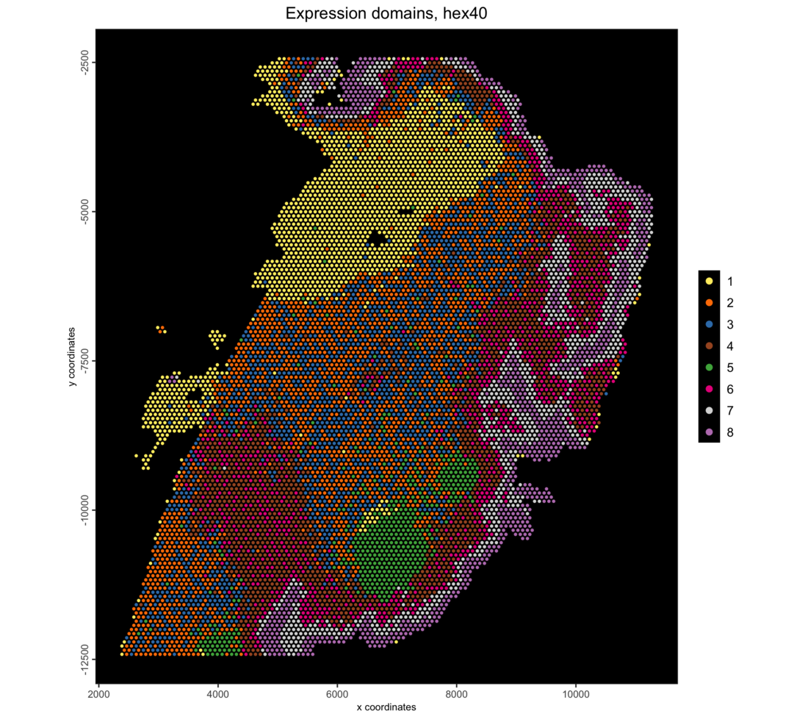
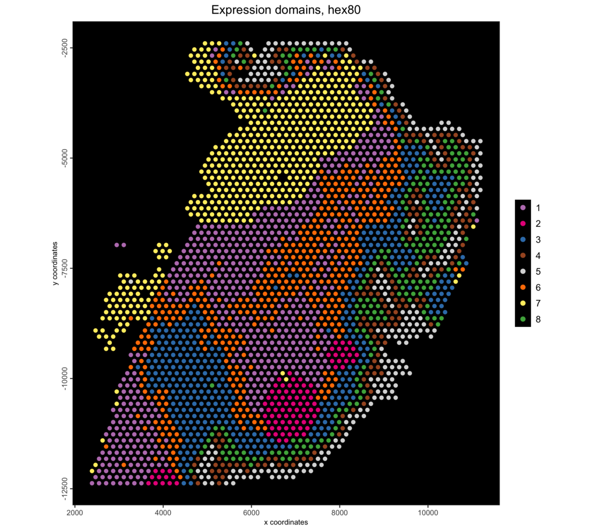
The top markers of each domain in the 80 µm grid:
dom_markers <- findMarkers_one_vs_all(g,
spat_unit = "hex80",
method = "scran",
cluster_column = "domain",
min_feats = 5,
verbose = FALSE
)
top_dom <- unique(dom_markers[, head(feats, 4), by = cluster]$V1)
plotMetaDataHeatmap(g,
spat_unit = "hex80",
expression_values = "normalized",
metadata_cols = "domain",
selected_feats = top_dom,
return_plot = FALSE
)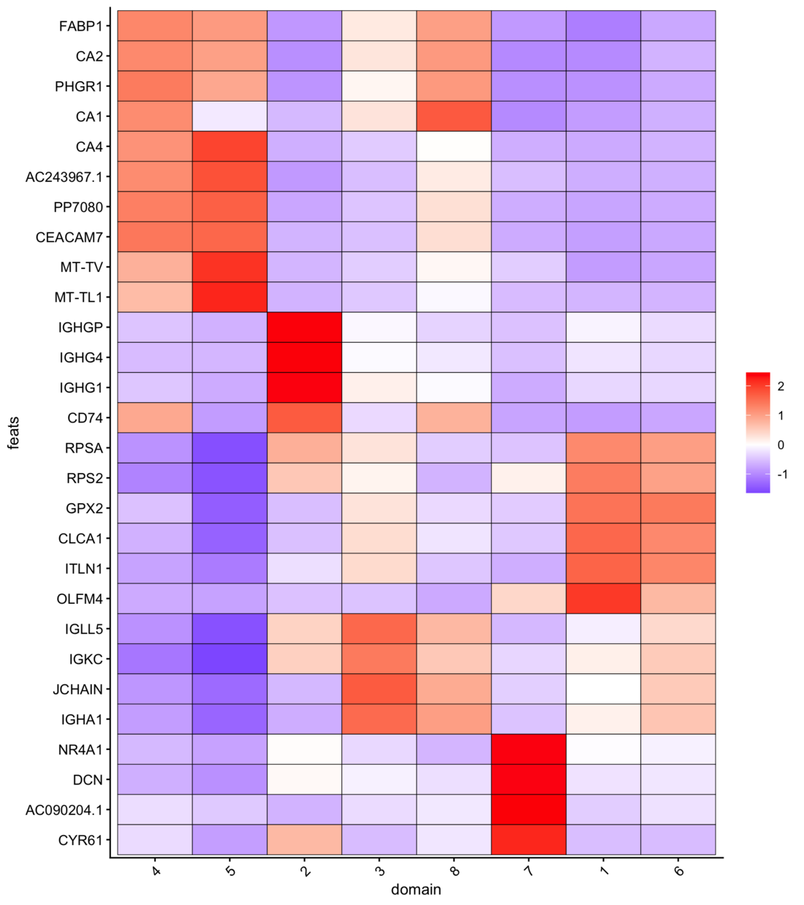
The domains follow the layers of the mucosa. From the lumen inwards:
- domains 4 and 5: surface epithelium (FABP1, CA2, CEACAM7, CA4)
- domain 8: upper crypts (CA1, FABP1)
- domains 1 and 6: crypts (OLFM4, GPX2, CLCA1, ITLN1)
- domain 3: lamina propria with IgA plasma cells (IGKC, JCHAIN, IGHA1)
- domain 2: the lymphoid follicle and IgG plasma cells (IGHG1, CD74)
- domain 7: submucosa and muscle (DCN, NR4A1, CYR61)
12.5 Niches from cell types
The second view groups the hexagons on which cell types they hold.
The cell to hexagon table from hex_members() gives the
groups, and calculateLabelProportions() counts the cell
types of each group. k-means on those proportions gives the niches:
members <- hex_members(80)
members <- members[hex_ID %in% spatIDs(g, spat_unit = "hex80")]
props <- calculateLabelProportions(g,
labels = "cell_types_k12",
groups = members,
column_group_id = "hex_ID",
spat_unit = "cell",
output = "matrix"
)
set.seed(1234)
km <- kmeans(props, centers = 8, nstart = 20)
niches <- data.table::data.table(cell_ID = rownames(props), niche = factor(km$cluster))
g <- addCellMetadata(g,
spat_unit = "hex80",
new_metadata = niches,
by_column = TRUE,
column_cell_ID = "cell_ID"
)The mix of cell types in each niche:
niche_mix <- data.table::as.data.table(as.table(km$centers))
data.table::setnames(niche_mix, c("niche", "cell_type", "fraction"))
ggplot2::ggplot(niche_mix, ggplot2::aes(cell_type, niche, fill = fraction)) +
ggplot2::geom_tile() +
ggplot2::geom_text(ggplot2::aes(label = round(fraction, 2)), size = 3) +
ggplot2::scale_fill_gradient(low = "white", high = "darkred") +
ggplot2::theme_minimal() +
ggplot2::theme(axis.text.x = ggplot2::element_text(angle = 45, hjust = 1)) +
ggplot2::labs(x = NULL, y = "niche")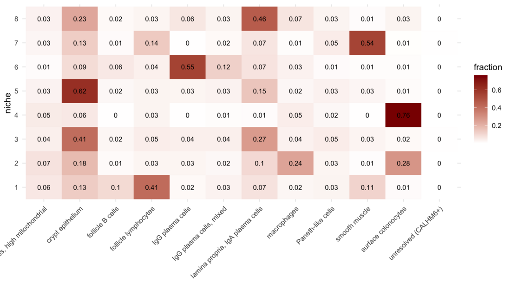
spatPlot2D(g,
spat_unit = "hex80",
cell_color = "niche",
color_as_factor = TRUE,
point_shape = "no_border",
point_size = 1.6,
background_color = "black",
show_plot = FALSE,
return_plot = TRUE
) + ggplot2::ggtitle("Cell type niches, hex80")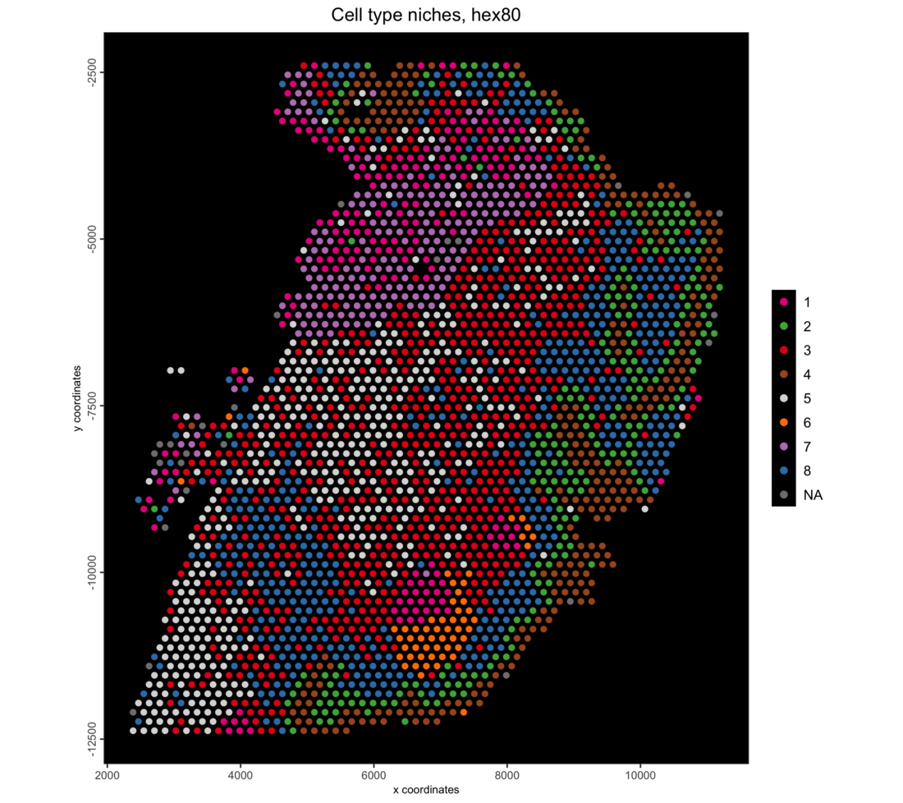
12.6 Compare the two
Each hexagon now has an expression domain and a niche. Hexagons without annotated cells have no niche. The share of each domain’s hexagons in each niche:
hex80_meta <- pDataDT(g, spat_unit = "hex80")
overlap_tab <- hex80_meta[!is.na(niche), .N, by = .(domain, niche)]
overlap_tab[, share := N / sum(N), by = domain]
ggplot2::ggplot(overlap_tab, ggplot2::aes(niche, factor(domain), fill = share)) +
ggplot2::geom_tile() +
ggplot2::geom_text(ggplot2::aes(label = N, color = share > 0.6), size = 3) +
ggplot2::scale_color_manual(values = c("black", "white"), guide = "none") +
ggplot2::scale_fill_gradient(low = "white", high = "darkblue") +
ggplot2::theme_minimal() +
ggplot2::labs(x = "niche", y = "expression domain")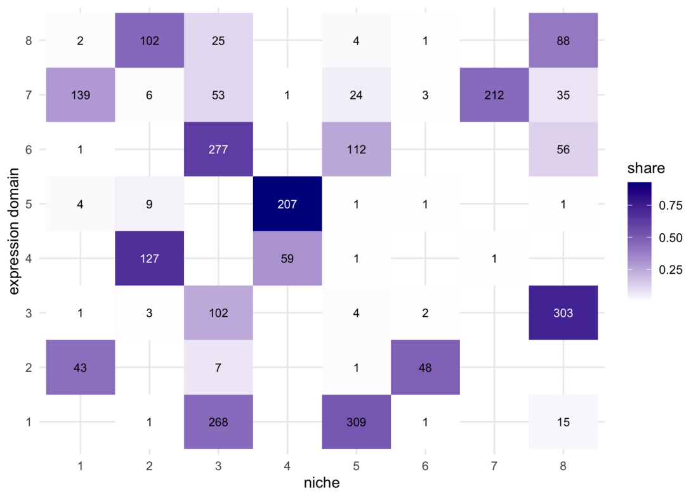
The two views agree where one cell type dominates:
- the surface epithelium (domain 5 is niche 4)
- the lamina propria with IgA plasma cells (domain 3 is mostly niche 8)
- the follicle with its IgG plasma cells (domain 2 is niches 1 and 6)
They differ in two places:
- The crypts. Expression splits them into domains 1 and 6, which hold the same cell types (niches 3 and 5). The hexagons differ in how much OLFM4 and goblet cell genes their crypt cells express, which one crypt epithelium type does not resolve.
- The submucosa. Domain 7 holds two niches, smooth muscle (niche 7) and lymphocyte aggregates (niche 1). The stromal genes dominate both in the summed expression, while the cell types tell them apart.
Expression domains need no cell segmentation and keep the spots between cells. Niches depend on the cell typing and are easier to name. Used together, each one points to where the other needs a closer look.
g <- saveGiotto(g, name = "hexbins") backend : `gDirSource`
path : path/to/stereoseq_colon_cells_projectThe object is saved to the project directory and can be reloaded with
loadGiotto(project_dir, name = "hexbins").
13 Further reading
- Stereo-seq mouse testis: segmented cells, the same steps on a fresh frozen section
- Stereo-seq mouse testis: your own polygons, which aggregates the spots into any polygons, from cells to a grid
- Stereo-seq Data Import, which covers the readers and the files in a SAW output directory
14 Run time and memory
How long each section of this tutorial took and the most memory it
used, on a run of this tutorial on an Apple M2 Ultra with 24 cores and
192 GB of memory, with the 8 workers set in Setup.
The data were read from an external SSD and the project written to the
internal disk. The whole tutorial took about 6.5 minutes. The cell
analysis peaks at 4.6 GB while reading the data. Streaming the spots
into the project raises the peak to 21 GB, because by default that read
may take a quarter of the free memory, here about 120 GB. With
options(giottodisk.gef_batch_rows = 5e6) the R session
stayed at about 12 GB for the same read, 20 seconds slower. The memory R
takes stays with the session until it ends.
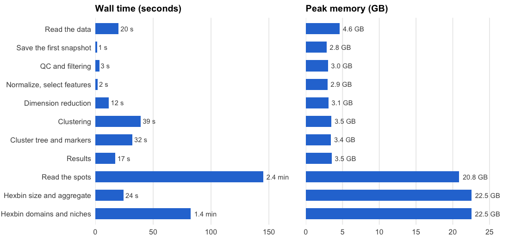
Memory is what macOS counts for the R session and its workers together (the Memory column of Activity Monitor), sampled once a second; each bar is the highest value during that section. Fewer workers in Setup lower it.
Time and memory per section
| Section | Time | Memory |
|---|---|---|
| Read the data | 20 s | 4.6 GB |
| Save the first snapshot | 1 s | 2.8 GB |
| QC and filtering | 3 s | 3.0 GB |
| Normalize, select features | 2 s | 2.9 GB |
| Dimension reduction | 12 s | 3.1 GB |
| Clustering | 39 s | 3.5 GB |
| Cluster tree and markers | 32 s | 3.4 GB |
| Results | 17 s | 3.5 GB |
| Read the spots | 2.4 min | 20.8 GB |
| Hexbin size and aggregate | 24 s | 22.5 GB |
| Hexbin domains and niches | 1.4 min | 22.5 GB |
15 Session info
R version 4.5.1 (2025-06-13)
Platform: aarch64-apple-darwin20
Running under: macOS Sonoma 14.5
Matrix products: default
BLAS: /Library/Frameworks/R.framework/Versions/4.5-arm64/Resources/lib/libRblas.0.dylib
LAPACK: /Library/Frameworks/R.framework/Versions/4.5-arm64/Resources/lib/libRlapack.dylib; LAPACK version 3.12.1
locale:
[1] en_US/C/en_US/C/en_US/en_US
time zone: America/New_York
tzcode source: internal
attached base packages:
[1] stats graphics grDevices utils datasets methods base
other attached packages:
[1] GiottoDisk_0.0.0.6 Giotto_4.3.5 GiottoClass_0.7.26 arrow_23.0.1.2
loaded via a namespace (and not attached):
[1] RColorBrewer_1.1-3 ggdendro_0.2.0
[3] jsonlite_2.0.0 wk_0.9.5
[5] magrittr_2.0.4 magick_2.9.1
[7] farver_2.1.2 rmarkdown_2.31
[9] vctrs_0.7.2 memoise_2.0.1
[11] GiottoUtils_0.2.9 terra_1.9-11
[13] htmltools_0.5.9 S4Arrays_1.8.1
[15] BiocNeighbors_2.2.0 Rhdf5lib_1.30.0
[17] SparseArray_1.8.1 rhdf5_2.52.1
[19] sass_0.4.10 parallelly_1.46.1
[21] bslib_0.10.0 htmlwidgets_1.6.4
[23] plotly_4.12.0 cachem_1.1.0
[25] igraph_2.2.2 lifecycle_1.0.5
[27] pkgconfig_2.0.3 rsvd_1.0.5
[29] Matrix_1.7-3 R6_2.6.1
[31] fastmap_1.2.0 GenomeInfoDbData_1.2.14
[33] MatrixGenerics_1.20.0 future_1.70.0
[35] digest_0.6.39 colorspace_2.1-2
[37] S4Vectors_0.48.1 dqrng_0.4.1
[39] irlba_2.3.7 GenomicRanges_1.60.0
[41] beachmat_2.24.0 filelock_1.0.3
[43] labeling_0.4.3 progressr_0.19.0
[45] httr_1.4.8 polyclip_1.10-7
[47] abind_1.4-8 compiler_4.5.1
[49] bit64_4.6.0-1 withr_3.0.2
[51] S7_0.2.1 backports_1.5.1
[53] BiocParallel_1.42.2 DBI_1.3.0
[55] viridis_0.6.5 ggforce_0.5.0
[57] R.utils_2.13.0 duckdb_1.5.6
[59] sedonadb_0.5.0.9000 MASS_7.3-65
[61] DelayedArray_0.34.1 rjson_0.2.23
[63] bluster_1.18.0 gtools_3.9.5
[65] GiottoVisuals_0.2.16 tools_4.5.1
[67] otel_0.2.0 future.apply_1.20.2
[69] R.oo_1.27.1 glue_1.8.0
[71] rhdf5filters_1.20.0 grid_4.5.1
[73] checkmate_2.3.4 cluster_2.1.8.3
[75] generics_0.1.4 gtable_0.3.6
[77] R.methodsS3_1.8.2 tidyr_1.3.2
[79] data.table_1.18.2.1 metapod_1.18.0
[81] BiocSingular_1.24.0 tidygraph_1.3.1
[83] ScaledMatrix_1.16.0 XVector_0.48.0
[85] BiocGenerics_0.54.1 tilework_1.0.0
[87] ggrepel_0.9.8 pillar_1.11.1
[89] limma_3.64.3 RcppHNSW_0.7.0
[91] nanoarrow_0.9.0 dplyr_1.2.0
[93] tweenr_2.0.3 lattice_0.22-7
[95] bit_4.6.0 tidyselect_1.2.1
[97] locfit_1.5-9.12 SingleCellExperiment_1.30.1
[99] scuttle_1.20.0 knitr_1.51
[101] gridExtra_2.3 IRanges_2.42.0
[103] Seqinfo_1.0.0 edgeR_4.6.3
[105] SummarizedExperiment_1.38.1 scattermore_1.2
[107] stats4_4.5.1 xfun_0.61
[109] graphlayouts_1.2.3 Biobase_2.68.0
[111] statmod_1.5.1 matrixStats_1.5.0
[113] UCSC.utils_1.4.0 lazyeval_0.2.2
[115] yaml_2.3.12 GiottoKernels_0.3.0
[117] evaluate_1.0.5 codetools_0.2-20
[119] ggraph_2.2.2 tibble_3.3.1
[121] colorRamp2_0.1.0 cli_3.6.5
[123] uwot_0.2.4 reticulate_1.45.0
[125] jquerylib_0.1.4 Rcpp_1.1.2
[127] GenomeInfoDb_1.44.3 globals_0.19.1
[129] dbplyr_2.5.2 png_0.1-9
[131] parallel_4.5.1 ggplot2_4.0.2
[133] assertthat_0.2.1 scran_1.38.1
[135] listenv_0.10.1 SpatialExperiment_1.20.0
[137] geoarrow_0.4.4 viridisLite_0.4.3
[139] scales_1.4.0 purrr_1.2.1
[141] crayon_1.5.3 rlang_1.1.7
[143] cowplot_1.2.0